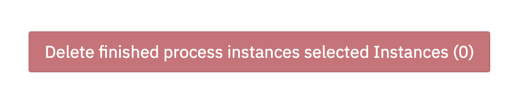
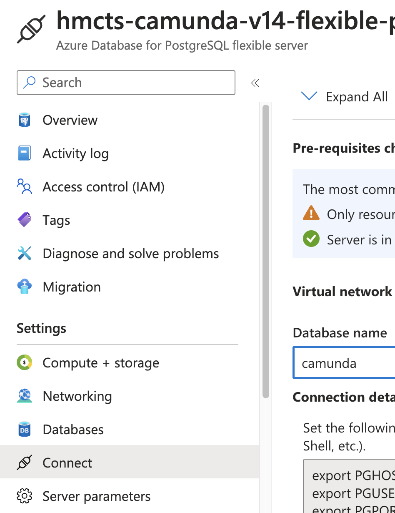
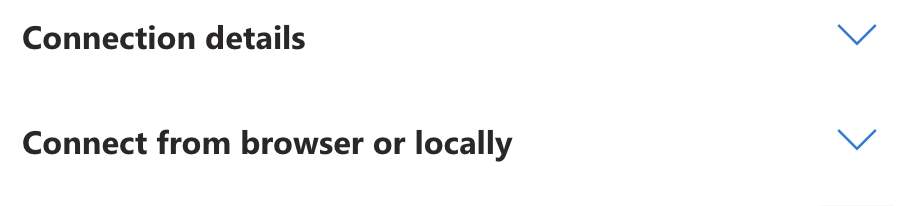
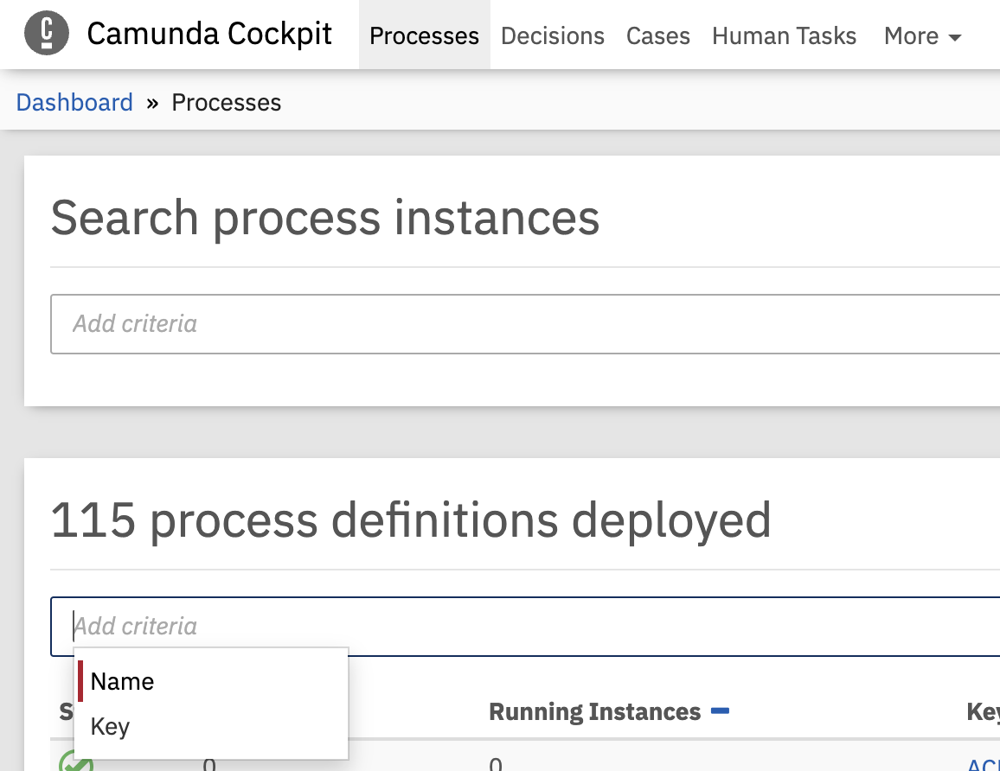
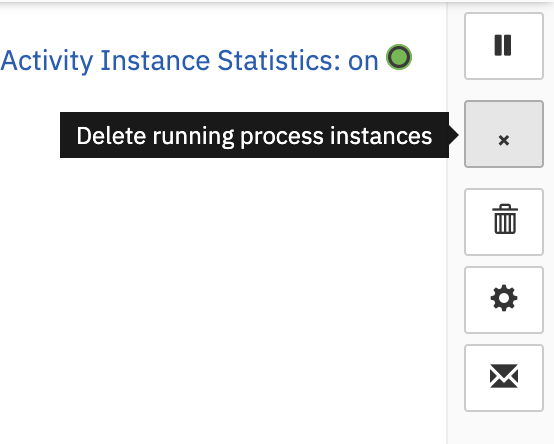
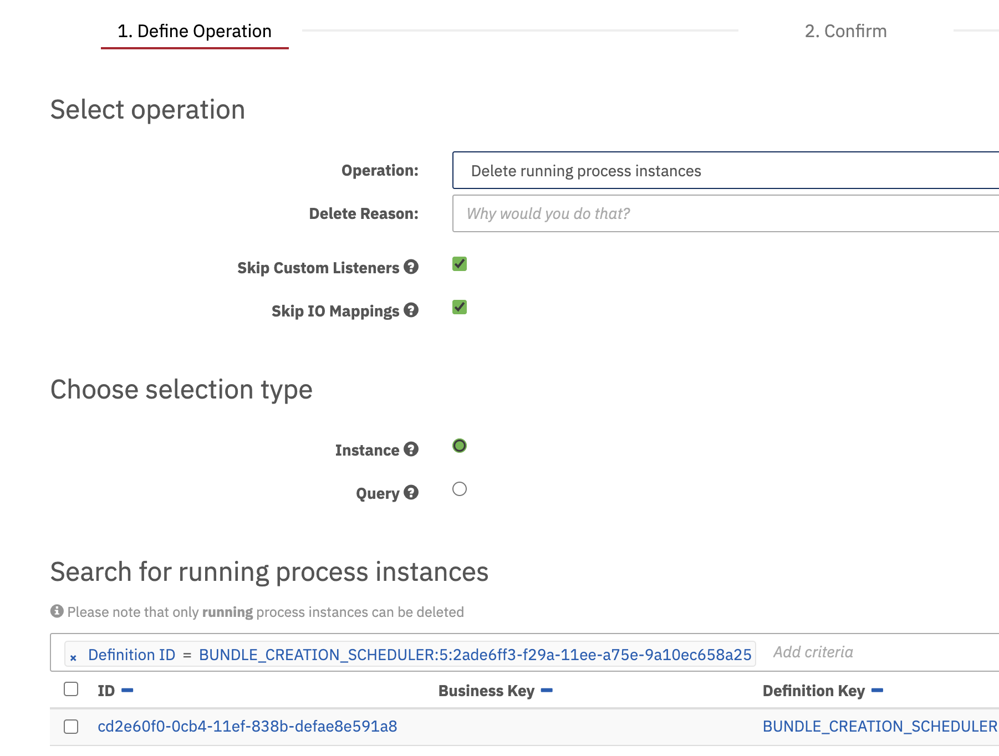
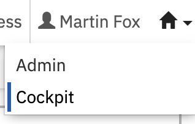
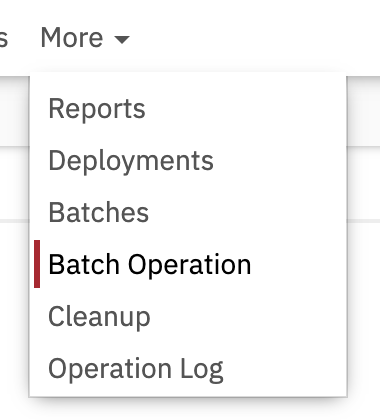
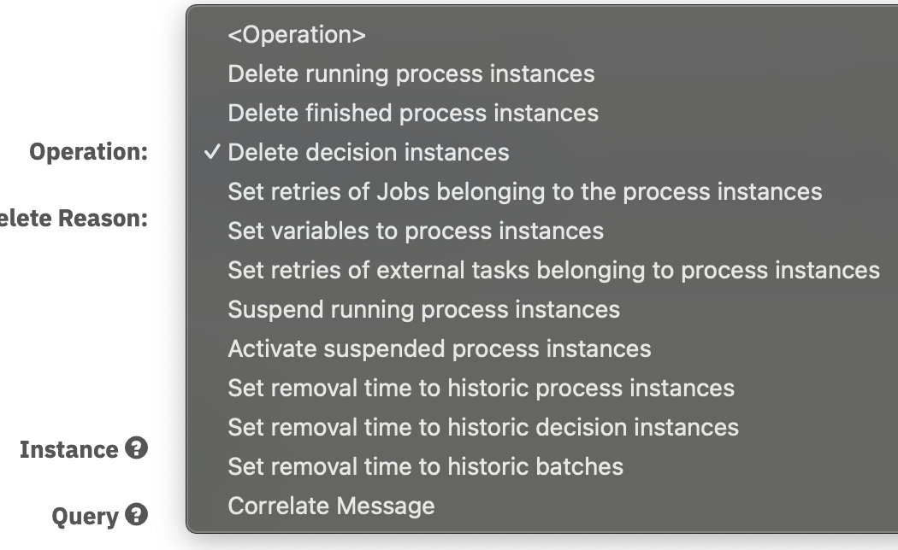
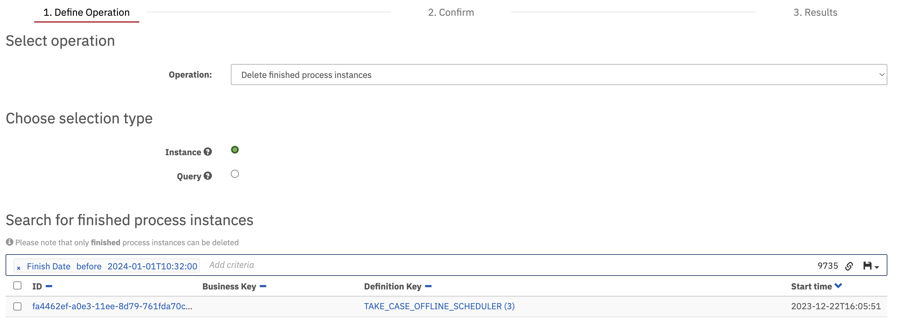

Camunda How To Guides
This page will contain helpful guidance on using Camunda from a PlatOps perspective
Accessing Camunda
Camunda is only available via the F5 VPN, you must connect before trying to access the service on any environment.
Local Development
There is a complete guide on building a local development environment available in the respository readme. This covers setting up your device and different development options including Docker.
Updates
Camunda provide regular updates to the base application, each update comes with changelog and information to help complete the update.
Some updates will be a simple version change
e.g. 'org.camunda.bpm:camunda-bom:7.20.3-ee' would update to 'org.camunda.bpm:camunda-bom:7.21.0-ee'
Others will be more complex and require additional DB Schema changes or upgrades to supporting applications such as Java or Spring Boot.
Every upgrade will have a guide that details the changes being made, the reasoning and links to guidance on making the change. Example upgrade guide for 7.20->7.21
Raising tickets with Camunda Support
If the worst happens and you cannot solve the issue yourself then we have access to Camunda to raise support tickets.
This URL leads to the Camunda Jira service desk.
The credentials for this can be found in the camunda-prod Key Vault under the secrets Camunda_Service_Desk_[user/password]
Logging in you will find 3 different options, the most likely option to use is Help Request.
Selecting this will open a request form to enter all the information you think will help Camunda to triage the ticket quicker.
For priority you choose between 3 levels, Level 3(L3) is a normal request issue and Level 1(L1) is a P1 response issue. If Camunda is currently functional then L3 is the correct option here.
For the Component select C7 which means Camunda version 7 (unless we upgrade to version 8 at some point!).
Its important that you check back on the ticket daily, the account is not linked to your email so you will not receive any update notifications.
Search Camunda database
There are 2 ways to search the Camunda database, one via Camunda UI itself and the other directly on the database instance, using the Camunda UI should always be preferrable as it carries less risk.
Camunda UI
This method of searching the DB is a workaround, it provides search facilities but its primary purpose is to make changes so please be careful.
Searching the Camunda DB via the UI provides less freedom, you can use batch operations of specific types to search through the returned results of that operation e.g. the operation delete all finished process instances will only ever return finish process instances, not running instances or any decisions.
If what you need falls into one of the existing batch operations then it is best to use the UI to carry out the query however you must NOT complete the operation if you are simply doing a search!

PSQL
Connecting directly to the database instance itself provides all of the traditional SQL based query options as any other database.
Connecting to the DB requires:
- Access to a bastion host, prod/nonprod depending on environment
- Access to the Camunda key vaults, named
camunda-<env> - Access to the database instance in azure, name
hmcts-camunda-v14-flexible-<env>
Selecting the relevant DB you can choose the connect option in the menu which will provide details on how to connect directly to the database

Use this information on the bastion host to connect to the database using psql as described on the page.
The 2 most obvious choices here are exporting environment variables or supplying all the details inline with the psql command

Remove process instances manually (running and finished)
There are instances were you may need to remove finished processes or decisions manually e.g. the team have removed their definition code from the repository and Camunda has not processed this correctly. Example ticket.
If you know the name of the definition you can search for it via the Camunda Cockpit UI.

Once you’ve found it you can select the process to see more details about it including a list of process instances for this specific process definition.
Within the definition page there is a delete running instances option

Selecting this starts a batch operation input and automatically selects Delete Running Process Instances in the operation type dropdown. This can be changed to Delete finished process instances if required (this is likely a good choice to test initially!).

Enter a reason for the deletion e.g. the Jira ticket number and then use the search criteria to narrow down the results to what you need.
Its possible to select only specific records in the list of results or by selecting Query it will select all records found, ALL records means across all pages shown now just the current page, remember these are SQL queries in the background!
Update removal time on a record
Camunda removal time updates are a batch operation that can be carried out via the Camunda Cockpit UI.
Updating a records removal time will control when that record will be removed from the Camunda database by the nightly Camunda clean up task.
To run a removal time operation you can:
Log into Camunda and select the
Cockpitoption
Navigate to the menu and select
morethenbatch operation
On this page you will find a number of fields, selecting
operationwill show a dropdown of available options
Select one of the
Set removal time to historic Xoptions that applies to your need.Initially this will search the database for all historic records for your chosen option e.g. all completed process instances. You can reduce the time to return results by using search criteria.
To narrow down these results you can add search criteria. Clicking in the
add criteriasearch box will show a list of available options such as start date, finish date,incident statusand a host ofIDsoptions.
For set removal time batch operations there are a number of additional options provided:
- Cleared - removes the removal time of the select records, there should be no reason to use this.
- Calculated - Uses either the Time To Live of the definition that created this record OR the system default of 30 days where no TTL is available. The value is calculated by Camunda an will likely be in the future by at least 30 days.
- Absolute - An absolute date chosen by the user to set for each record selected, a calendar input appears for this option and it can be set to any date past or present. Past simply means the record will be removed during the next clean up task.
- Hierarchical - Sets the removal time across all instances of the hierarchy
- Update in chunks - Will stream the changes slowly to ensure the database is not overloaded. It is very advisable to use this option.
- Chunk Size - this option will appear when
Update in chunksis select and should be set to a reasonable number to maintain normal functionality of the service but still achieve the desired outcome.